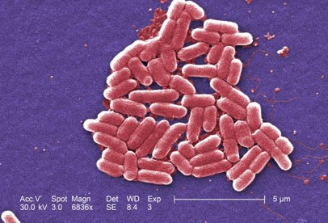
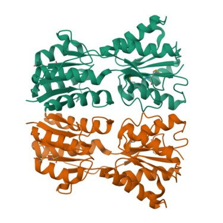

Experimental Workflows
BM932 Workshop 2
2025-11-04
Learning Objectives
After this workshop, you should be able to:
As an illustration, we will work through an example:
We have a novel strain of Escherichia coli that appears to be quite virulent

Its genome encodes a protein predicted to be a novel transcription factor, VirA

Hypothesis: VirA regulates virulence gene expression in this E. coli strain
We have a novel strain of Escherichia coli that appears to be quite virulent
Its genome encodes a protein predicted to be a novel transcription factor, VirA
Hypothesis: VirA regulates virulence gene expression in this E. coli strain
How can we test this hypothesis? What experiment(s) would you like to do? 1
Genetics approach – how would you create mutant strain(s) for analysing the role of VirA in your strain? (deletion, overexpression, other mutants?)
- What method would you use?
- What controls are necessary?
- What are the advantages/limitations of this approach?
Biochemistry approach - how would you isolate and purify the VirA protein if you wanted to study it in vitro?
- What method would you use?
- What controls are necessary?
- What are the advantages/limitations of this approach?
What are the phenotypes of a virA mutant strain?
- What method(s) would you use to study virA mutant phenotypes?
- What controls are necessary?
- Can you predict what the results of this experiment might look like, and how would you analyse & interpret the data?
- What are the advantages/limitations of this approach?
- For any experiments involving animals, what is required in terms of ethics?
What DNA sequences does VirA bind?
- What method would you use to determine what DNA sequences VirA binds to?
- What controls are necessary?
- Can you predict what the results of this experiment might look like, and how would you analyse & interpret the data?
- What are the advantages/limitations of this approach?
What gene(s) does VirA regulate?
- What method would you use to identify the VirA regulon?
- What controls are necessary?
- Can you predict what the results of this experiment might look like, and how would you analyse & interpret the data?
- What are the advantages/limitations of this approach?
When and to what extent is VirA expressed in the cell?
- What method would you use to measure expression of VirA?
- What controls are necessary?
- Can you predict what the results of this experiment might look like, and how would you analyse & interpret the data?
- What are the advantages/limitations of this approach?
What protein(s) does VirA interact with?
- How would you identify/validate potential VirA-interacting proteins?
- What controls are necessary?
- Can you predict what the results of this experiment might look like, and how would you analyse & interpret the data?
- What are the advantages/limitations of this approach?
What regulates VirA?
- How would you identify/validate potential regulators of VirA?
- What controls are necessary?
- Can you predict what the results of this experiment might look like, and how would you analyse & interpret the data?
- What are the advantages/limitations of this approach?
Challenge
Imagine that the BBSRC have given you 2 million pounds over the next 3 years to study the role of VirA in virulence in this new E. coli strain.
What experiments would you prioritise? Can you make a flow chart and/or Gantt chart illustrating what you would do?